Casseo
A forever-free offline audio player. Smart categories sort your music by how you listen, and the whole player is yours to customize.
Free on Google Play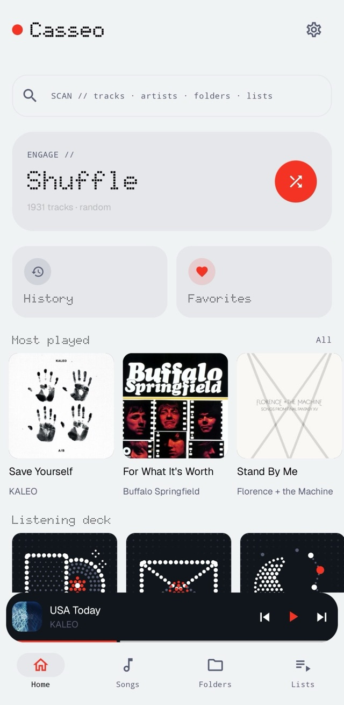
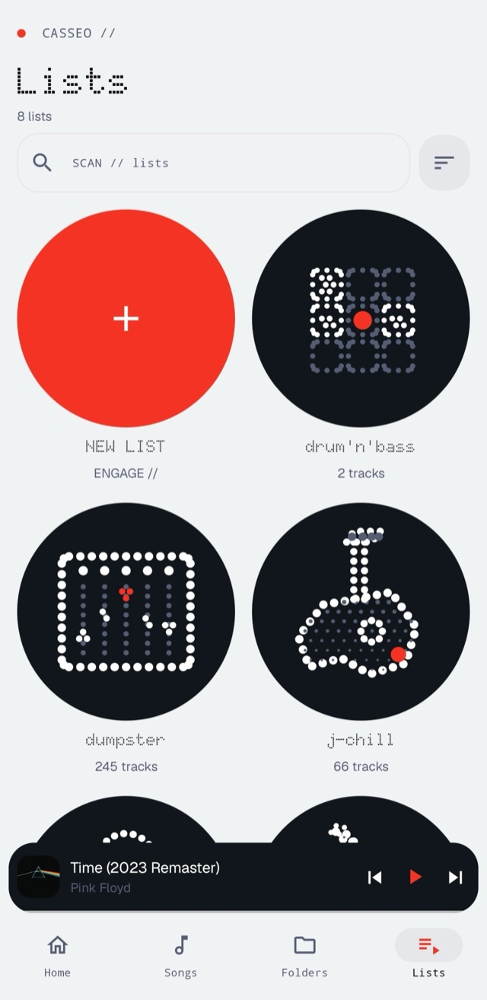
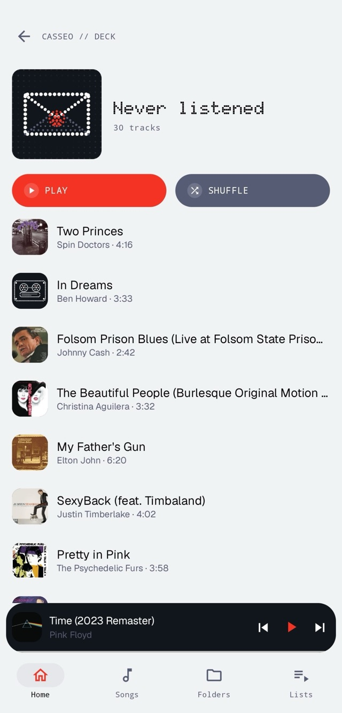
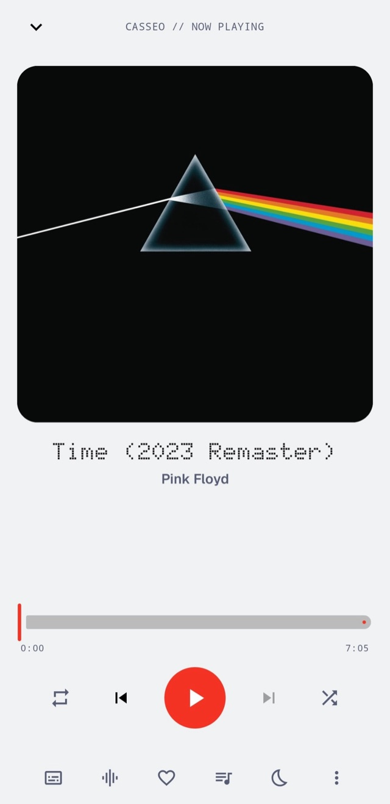
Things I build on the side, mostly to scratch my own itch.
A forever-free offline audio player. Smart categories sort your music by how you listen, and the whole player is yours to customize.
Free on Google Play



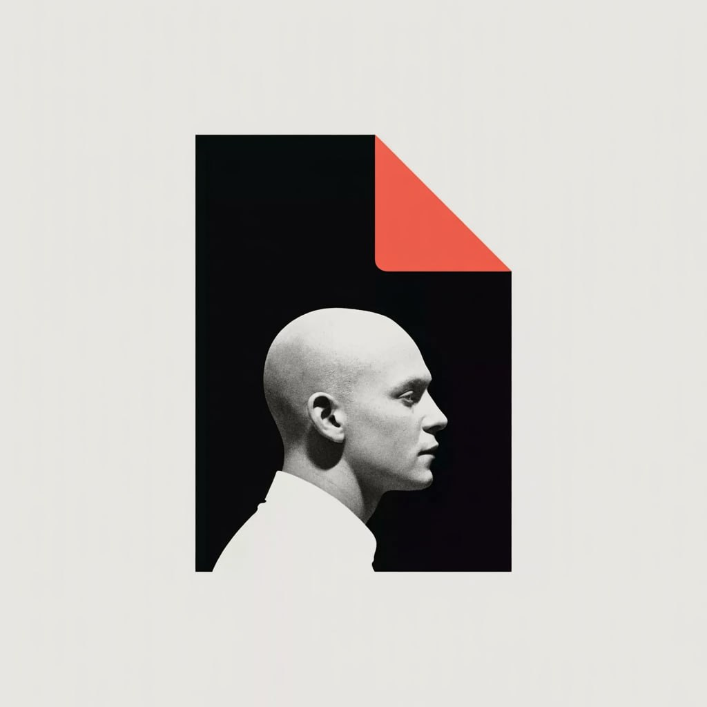
Dynamic documents were a pain in the back, and no SaaS could fix that for me. With //dynodocy, you can upload a DOCX directly and get clean HTML in a second, ready to print to PDF. Pagination, tables, headers, and every other feature carry over automatically. Add your variables, and your dynamic template is ready.
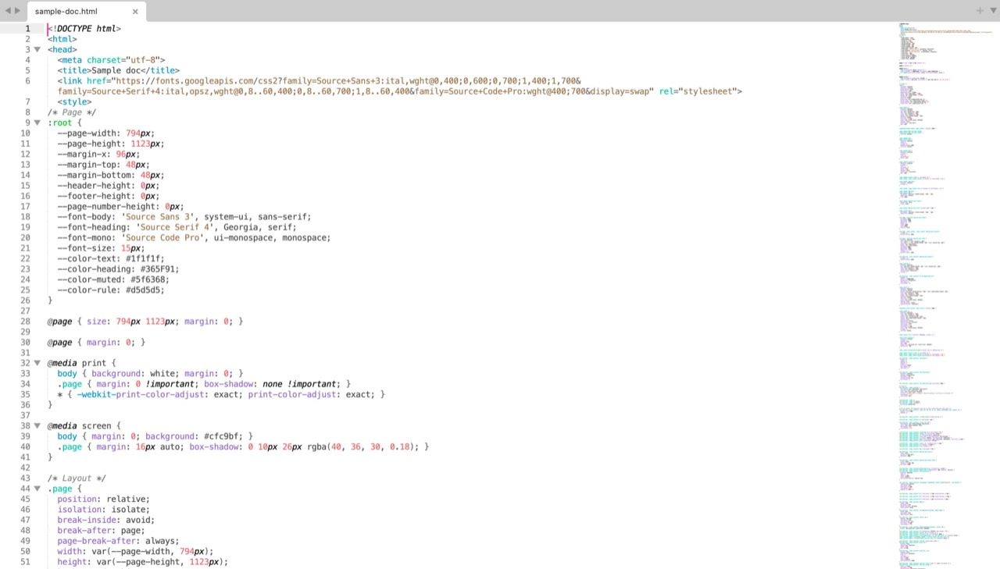
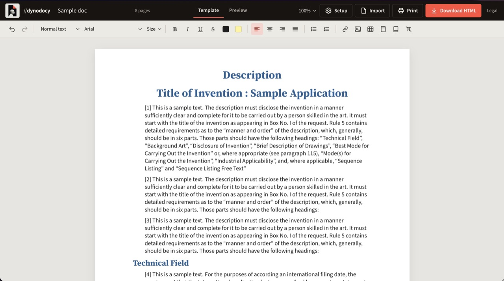
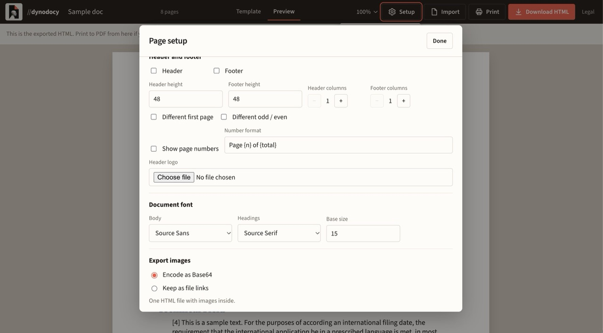
Frankfurt is a small town, and it can get a bit boring. I lead a community of 600+ foreigners here, so I built DOCH: a calendar of every event worth going to and a guide to the places we recommend, all in one app.
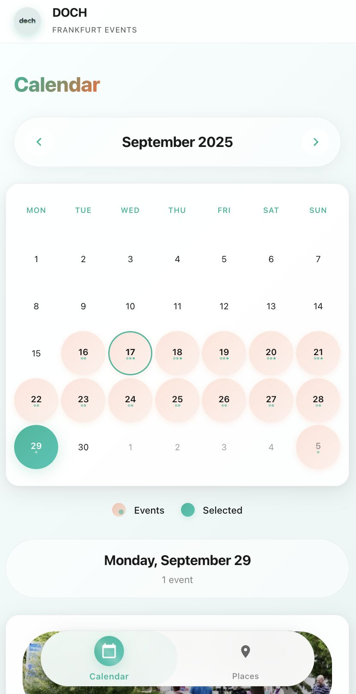

An open-source portfolio optimizer. Pick a method (Markowitz, Max Sharpe, or Black-Litterman), then rebalance and backtest the result.
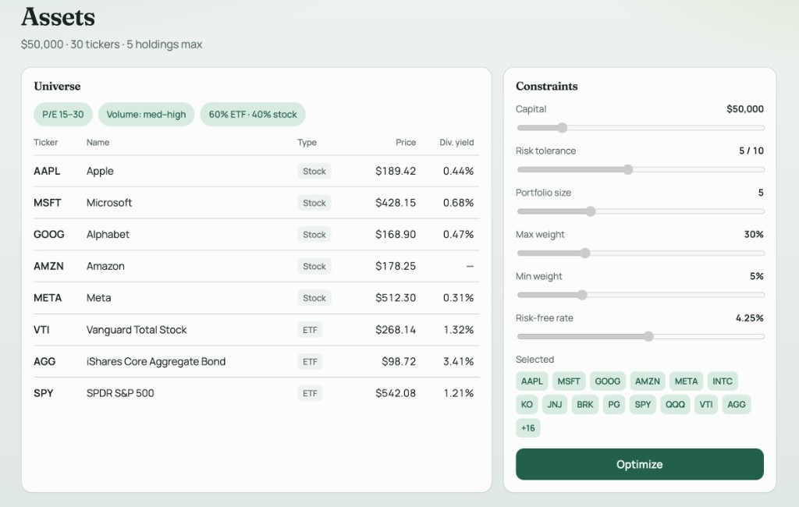
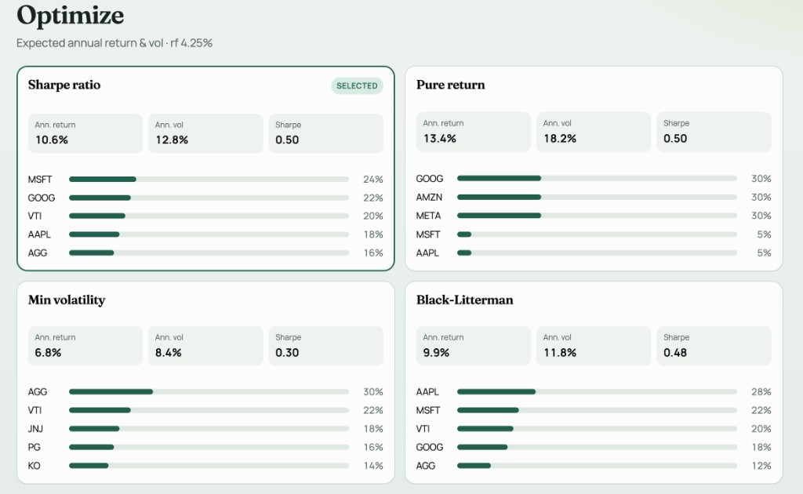
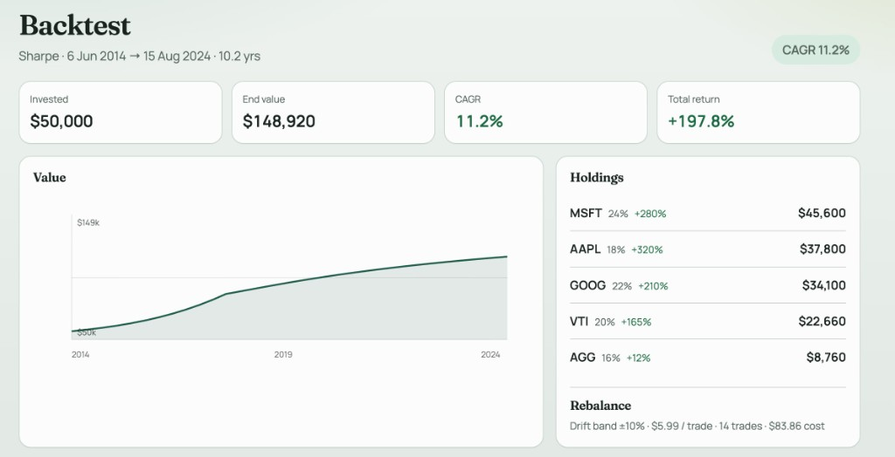
Before I delegate anything to an AI version of me, it has to do the job right and stay out of the uncanny valley. Kalabot runs on Qwen with a behavioral layer that reads each situation (who’s asking, the hour, what’s already waiting) and replies the way I would.
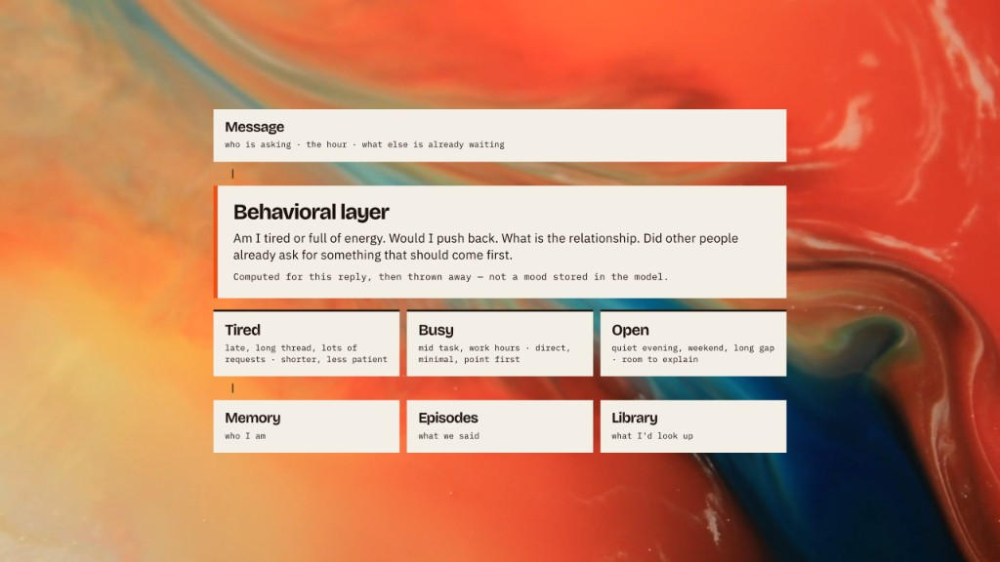
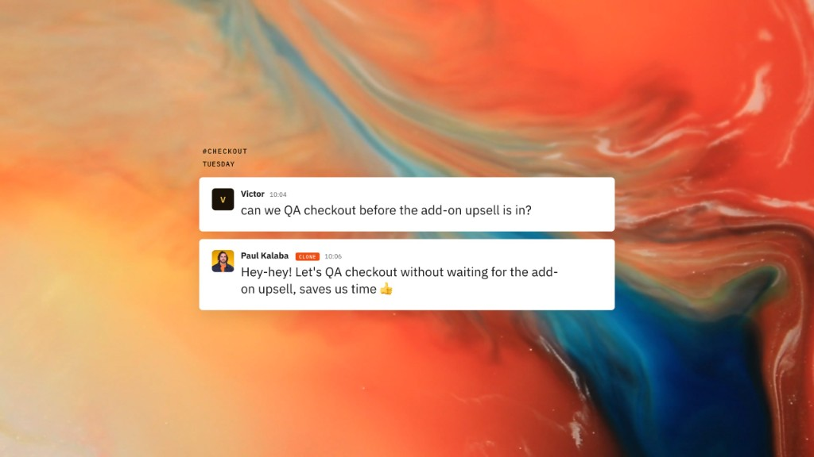
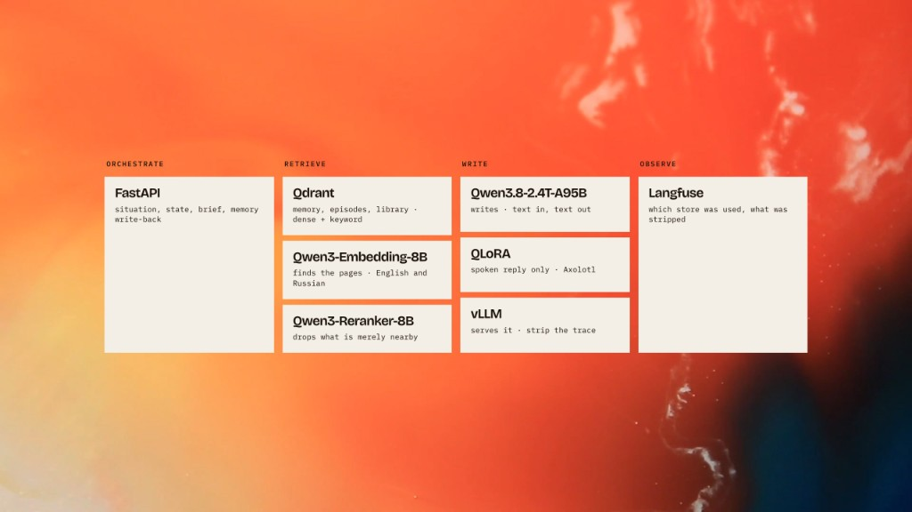
01 / 05